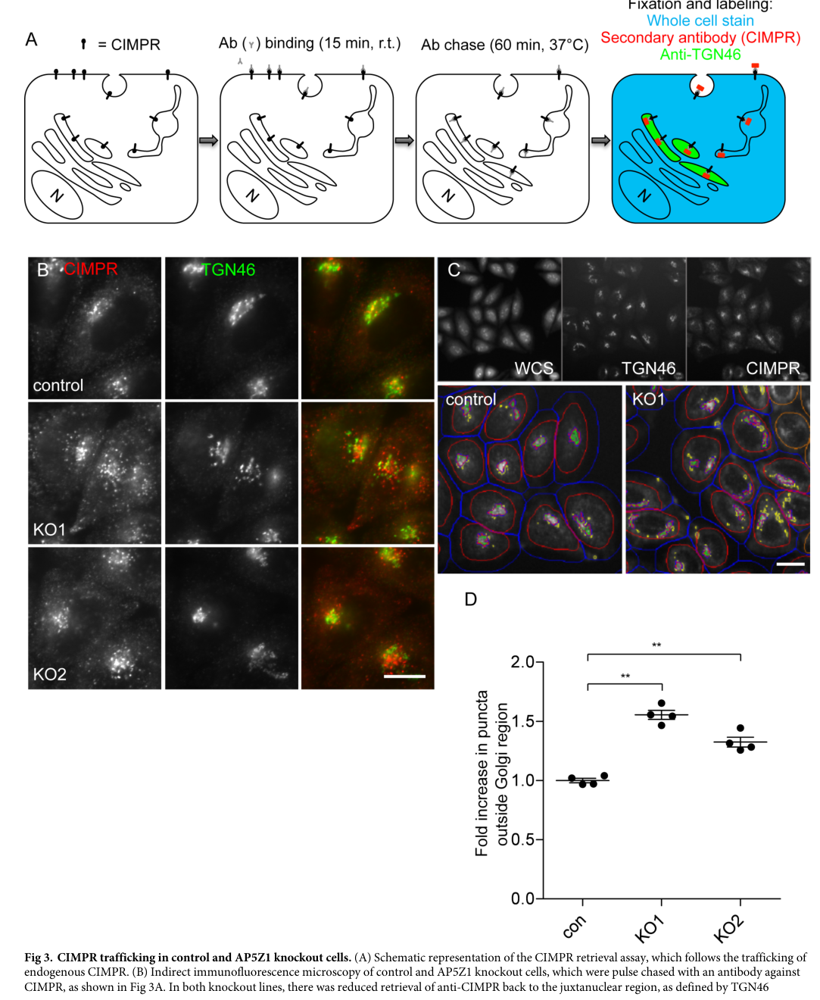

Question: You are an expert researcher providing comprehensive, well-cited information.
Provide detailed information focusing on: 1. Key concepts and definitions with current understanding 2. Recent developments and latest research (prioritize 2023-2024 sources) 3. Current applications and real-world implementations 4. Expert opinions and analysis from authoritative sources 5. Relevant statistics and data from recent studies
Format as a comprehensive research report with proper citations. Include URLs and publication dates where available. Always prioritize recent, authoritative sources and provide specific citations for all major claims.
Disease Characteristics Research Template
Target Disease
- Disease Name: Hereditary Spastic Paraplegia 48
- MONDO ID: (if available)
- Category: Mendelian
Research Objectives
Please provide a comprehensive research report on Hereditary Spastic Paraplegia 48 covering all of the disease characteristics listed below. This report will be used to populate a disease knowledge base entry. Be thorough and cite primary literature (PMID preferred) for all claims.
For each section, suggested databases/resources are listed. These are the first places you should search for information on each topic.
1. Disease Information
Search first: OMIM, Orphanet, ICD-10/ICD-11, MeSH, PubMed
- What is the disease? Provide a concise overview.
- What are the key identifiers? (OMIM, Orphanet, ICD-10/ICD-11, MeSH, Mondo)
- What are the common synonyms and alternative names?
- Is the information derived from individual patients (e.g., EHR) or aggregated disease-level resources?
2. Etiology
- Disease Causal Factors: What are the primary causes? (genetic, environmental, infectious, mechanistic)
- Risk Factors:
Search first: PubMed, Cochrane Library, UpToDate, clinical guidelines, ClinVar, ClinGen, GWAS Catalog, PheGenI, CTD, CDC, WHO, epidemiological databases
- Genetic risk factors (causal variants, susceptibility loci, modifier genes)
- Environmental risk factors (toxins, lifestyle, occupational exposures, age, sex, family history)
- Protective Factors:
Search first: PubMed, Cochrane Library, clinical trial databases, GWAS Catalog, gnomAD, WHO, CDC, nutrition databases
- Genetic protective factors (protective variants, modifier alleles)
- Environmental protective factors (diet, lifestyle, exposures that reduce risk)
- Gene-Environment Interactions: How do genetic and environmental factors interact to influence disease?
Search first: CTD, PubMed, PheGenI, GxE databases
3. Phenotypes
Search first: HPO (Human Phenotype Ontology), OMIM, Orphanet, PubMed, clinicaltrials.gov, MedDRA, SNOMED CT, DECIPHER, LOINC
For each phenotype, provide: - Phenotype type: symptoms, clinical signs, physical manifestations, behavioral changes, or laboratory abnormalities
For symptoms/signs: HPO, OMIM, Orphanet, PubMed For behavioral changes: HPO, DSM, RDoC (Research Domain Criteria), PubMed For laboratory abnormalities: LOINC, SNOMED CT, LabTests Online, PubMed - Phenotype characteristics: Search first: OMIM, Orphanet, HPO, PubMed - Age of symptom onset (neonatal, childhood, adult-onset, late-onset) - Symptom severity (mild, moderate, severe, variable) - Symptom progression (stable, progressive, episodic, fluctuating) - Frequency among affected individuals (percentage or qualitative) - Quality of life impact: Effects on daily functioning and well-being (per-phenotype when possible) Search first: EQ-5D database, SF-36, WHO QOL databases, PubMed - Suggest HPO (Human Phenotype Ontology) terms for each phenotype
4. Genetic/Molecular Information
- Causal Genes: Gene mutations or chromosomal abnormalities responsible for disease (gene symbols, OMIM IDs)
Search first: OMIM, ClinVar, HGMD, Ensembl, NCBI Gene
- Pathogenic Variants:
- Affected genes (gene symbols, HGNC IDs) > Search first: OMIM, NCBI Gene, Ensembl, HGNC, UniProt, GeneCards
- Variant classification (pathogenic, likely pathogenic, VUS per ACMG/AMP guidelines) > Search first: ClinVar, ClinGen, ACMG/AMP guidelines, VarSome
- Variant type/class (missense, frameshift, nonsense, splice-site, structural)
- Allele frequency in population databases > Search first: gnomAD, 1000 Genomes, ExAC, TOPMed, dbSNP
- Somatic vs germline origin > Search first: COSMIC (somatic), ClinVar, ICGC, TCGA
- Functional consequences (loss of function, gain of function, dominant negative)
- Modifier Genes: Genes that modify disease severity or expression
- Epigenetic Information: DNA methylation, histone modifications, chromatin changes affecting disease
Search first: ENCODE, Roadmap Epigenomics, MethBase, DiseaseMeth
- Chromosomal Abnormalities: Large-scale genetic changes (aneuploidy, translocations, inversions)
Search first: DECIPHER, ClinVar, ECARUCA, UCSC Genome Browser
5. Environmental Information
- Environmental Factors: Non-genetic contributing factors (toxins, radiation, pollution, occupational exposure)
Search first: CTD (Comparative Toxicogenomics Database), TOXNET, PubMed, EPA databases
- Lifestyle Factors: Behavioral factors (smoking, diet, exercise, alcohol consumption)
Search first: CDC databases, WHO, PubMed, NHANES
- Infectious Agents: If applicable, pathogens causing or triggering disease (bacteria, viruses, fungi, parasites)
Search first: NCBI Taxonomy, ViPR, BV-BRC, MicrobeDB, GIDEON
6. Mechanism / Pathophysiology
- Molecular Pathways: Specific signaling cascades or biochemical pathways involved (Wnt, MAPK, mTOR, PI3K-AKT, etc.)
Search first: KEGG, Reactome, WikiPathways, PathBank, BioCyc
- Cellular Processes: Cell-level mechanisms (apoptosis, autophagy, cell cycle dysregulation, inflammation, etc.)
Search first: Gene Ontology (GO), Reactome, KEGG, PubMed
- Protein Dysfunction: How protein structure or function is altered (misfolding, aggregation, loss of function, gain of function)
Search first: UniProt, PDB (Protein Data Bank), InterPro, Pfam, AlphaFold
- Metabolic Changes: Alterations in metabolic processes (energy metabolism, lipid metabolism, amino acid metabolism)
Search first: KEGG, BioCyc, HMDB (Human Metabolome Database), BRENDA
- Immune System Involvement: Role of immune response (autoimmunity, immunodeficiency, chronic inflammation)
Search first: ImmPort, Immunome Database, IEDB, Gene Ontology
- Tissue Damage Mechanisms: How tissues/ are injured (oxidative stress, ischemia, fibrosis, necrosis)
Search first: PubMed, Gene Ontology, Reactome
- Biochemical Abnormalities: Specific molecular defects (enzyme deficiencies, receptor dysfunction, ion channel defects)
Search first: BRENDA, UniProt, KEGG, OMIM, PubMed
- Epigenetic Changes: DNA methylation, histone modifications affecting gene expression in disease
Search first: ENCODE, Roadmap Epigenomics, MethBase, DiseaseMeth
- Molecular Profiling (if available):
- Transcriptomics/gene expression changes > Search first: GEO (Gene Expression Omnibus), ArrayExpress, GTEx, Human Cell Atlas, SRA
- Proteomics findings > Search first: PRIDE, ProteomeXchange, Human Protein Atlas, STRING, BioGRID
- Metabolomics signatures > Search first: MetaboLights, Metabolomics Workbench, HMDB, METLIN
- Lipidomics alterations > Search first: LIPID MAPS, SwissLipids, LipidHome, Metabolomics Workbench
- Genomic structural features > Search first: UCSC Genome Browser, Ensembl, NCBI, dbVar, DGV
- Advanced Technologies (if applicable):
- Single-cell analysis findings (cell-type specific mechanisms, cellular heterogeneity) > Search first: Human Cell Atlas, Single Cell Portal, GEO, CELLxGENE
- Spatial transcriptomics findings > Search first: GEO, Spatial Research, Vizgen, 10x Genomics data
- Multi-omics integration results > Search first: TCGA, ICGC, cBioPortal, LinkedOmics, PubMed
- Functional genomics screens (CRISPR, RNAi) > Search first: DepMap, GenomeRNAi, PubMed, BioGRID ORCS
For each mechanism, describe: - The causal chain from initial trigger to clinical manifestation - Which mechanisms are upstream vs downstream - What cell types and biological processes are involved - Suggest GO terms for biological processes and CL terms for cell types
7. Anatomical Structures Affected
- Organ Level:
- Primary organs directly affected
- Secondary organ involvement (complications, secondary effects)
- Body systems involved (cardiovascular, nervous, digestive, respiratory, endocrine, etc.)
Search first: Uberon, FMA (Foundational Model of Anatomy), OMIM, HPO, ICD-11, MeSH, SNOMED CT
- Tissue and Cell Level:
- Specific tissue types affected (epithelial, connective, muscle, nervous)
- Specific cell populations targeted (with Cell Ontology terms)
Search first: Uberon, Human Protein Atlas, Cell Ontology, Human Cell Atlas, CellMarker, PanglaoDB
- Subcellular Level:
- Cellular compartments involved (mitochondria, nucleus, ER, lysosomes) (with GO Cellular Component terms)
Search first: Gene Ontology (Cellular Component), UniProt, Human Protein Atlas
- Localization:
- Specific anatomical sites (with UBERON terms) > Search first: FMA, Uberon, NeuroNames (for brain), SNOMED CT
- Lateralization (unilateral, bilateral, asymmetric) > Search first: HPO, clinical literature, imaging databases
8. Temporal Development
- Onset:
- Typical age of onset (congenital, pediatric, adult, geriatric)
- Onset pattern (acute, subacute, chronic, insidious)
Search first: OMIM, Orphanet, HPO, PubMed
- Progression:
- Disease stages (early, intermediate, advanced, end-stage) > Search first: Cancer Staging Manual (AJCC), WHO classifications, PubMed
- Progression rate (rapid, slow, variable)
- Disease course pattern (episodic, relapsing-remitting, progressive, stable)
- Disease duration (self-limited, chronic lifelong)
Search first: Disease registries, longitudinal cohort databases, natural history studies, PubMed, Orphanet, OMIM
- Patterns:
- Remission patterns (spontaneous, treatment-induced) > Search first: Clinical trial databases, disease registries, PubMed
- Critical periods (time windows of vulnerability or opportunity for intervention) > Search first: PubMed, developmental biology databases, clinical guidelines
9. Inheritance and Population
- Epidemiology:
- Prevalence (cases per 100,000 at given time)
- Incidence (new cases per 100,000 per year)
Search first: Orphanet, CDC, WHO, GBD (Global Burden of Disease), national registries, SEER, disease registries
- For Genetic Etiology:
- Inheritance pattern (AD, AR, X-linked, mitochondrial, multifactorial, polygenic) > Search first: OMIM, Orphanet, ClinVar, GTR (Genetic Testing Registry)
- Penetrance (complete, incomplete, age-dependent) > Search first: ClinVar, OMIM, PubMed, ClinGen
- Expressivity (variable, consistent) > Search first: OMIM, ClinVar, PubMed
- Genetic anticipation (increasing severity in successive generations) > Search first: OMIM, PubMed (especially for repeat expansion disorders)
- Germline mosaicism > Search first: ClinVar, OMIM, genetic counseling literature, PubMed
- Founder effects (population-specific mutations) > Search first: gnomAD, population genetics databases, PubMed
- Consanguinity role > Search first: OMIM, population studies, genetic counseling resources
- Carrier frequency > Search first: gnomAD, carrier screening databases, GeneReviews, GTR
- Population Demographics:
- Affected populations (ethnic or demographic groups with higher prevalence) > Search first: gnomAD, 1000 Genomes, PAGE Study, PubMed, population registries
- Geographic distribution (endemic areas, regional variation) > Search first: WHO, CDC, GBD, Orphanet, geographic epidemiology databases
- Geographic distribution of specific variants
- Sex ratio (male:female) > Search first: Disease registries, OMIM, PubMed, epidemiological databases
- Age distribution of affected individuals > Search first: CDC, disease registries, SEER, Orphanet
10. Diagnostics
- Clinical Tests:
- Laboratory tests (blood, urine, tissue chemistry, specific enzyme assays) > Search first: LOINC, LabTests Online, PubMed
- Biomarkers (proteins, metabolites, genetic markers, circulating biomarkers) > Search first: FDA Biomarker List, BEST (Biomarkers, EndpointS, and other Tools), PubMed
- Imaging studies (X-ray, CT, MRI, PET, ultrasound) > Search first: RadLex, DICOM, Radiopaedia, imaging databases
- Functional tests (pulmonary function, cardiac stress tests) > Search first: LOINC, clinical guidelines, PubMed
- Electrophysiology (EEG, EMG, ECG, nerve conduction studies) > Search first: LOINC, clinical neurophysiology databases, PubMed
- Biopsy findings (histopathology, immunohistochemistry) > Search first: SNOMED CT, College of American Pathologists resources, PubMed
- Pathology findings (microscopic examination) > Search first: SNOMED CT, Digital Pathology databases, PubMed
- Genetic Testing:
Search first: GTR (Genetic Testing Registry), GeneReviews, ClinGen
- Overview of recommended genetic testing approach
- Whole genome sequencing (WGS) utility > Search first: GTR, ClinVar, GEL (Genomics England), gnomAD
- Whole exome sequencing (WES) utility > Search first: GTR, ClinVar, OMIM, GeneMatcher
- Gene panels (which panels, which genes) > Search first: GTR, ClinVar, laboratory-specific databases
- Single gene testing > Search first: GTR, ClinVar, OMIM, GeneReviews
- Chromosomal microarray (CMA) > Search first: DECIPHER, ClinVar, dbVar, ECARUCA
- Karyotyping > Search first: Chromosome Abnormality Database, ClinVar, cytogenetics resources
- FISH > Search first: ClinVar, cytogenetics databases, PubMed
- Mitochondrial DNA testing > Search first: MITOMAP, MSeqDR, ClinVar, GTR
- Repeat expansion testing > Search first: GTR, ClinVar, repeat expansion databases, PubMed
- Omics-Based Diagnostics (if applicable):
- RNA sequencing / transcriptomics > Search first: GEO, ArrayExpress, GTEx, RNA-seq databases
- Proteomics > Search first: PRIDE, ProteomeXchange, FDA Biomarker database
- Metabolomics > Search first: MetaboLights, Metabolomics Workbench, HMDB
- Epigenomics > Search first: GEO, ENCODE, Roadmap Epigenomics, MethBase
- Liquid biopsy > Search first: COSMIC, ClinVar, liquid biopsy databases, PubMed
- Clinical Criteria:
- Standardized diagnostic criteria (DSM, ICD, society guidelines) > Search first: DSM-5, ICD-11, clinical society guidelines, UpToDate
- Differential diagnosis (other conditions to rule out, with distinguishing features) > Search first: DynaMed, UpToDate, clinical decision support systems
- Screening:
- Screening methods for asymptomatic individuals (newborn screening, carrier screening, cascade screening) > Search first: ACMG recommendations, CDC newborn screening, GTR
11. Outcome/Prognosis
- Survival and Mortality:
- Survival rate (5-year, 10-year, overall) > Search first: SEER, cancer registries, disease-specific registries, PubMed
- Life expectancy (with and without treatment if applicable) > Search first: Orphanet, disease registries, actuarial databases, PubMed
- Mortality rate > Search first: CDC, WHO, GBD, national mortality databases
- Disease-specific mortality (deaths directly attributable to disease) > Search first: Disease registries, CDC Wonder, GBD, PubMed
- Morbidity and Function:
- Morbidity (disease-related disability and health impacts) > Search first: GBD, WHO, disability databases, PubMed
- Disability outcomes (long-term functional impairments) > Search first: ICF (International Classification of Functioning), disability registries
- Quality of life measures (EQ-5D, SF-36, PROMIS, disease-specific tools) > Search first: EQ-5D database, SF-36, PROMIS, PubMed
- Disease Course:
- Complications (secondary problems: infections, organ failure, etc.) > Search first: ICD codes, disease registries, clinical databases, PubMed
- Recovery potential (likelihood and extent of recovery, with vs without treatment) > Search first: Natural history studies, rehabilitation databases, PubMed
- Prediction:
- Prognostic factors (age, disease severity, biomarkers, treatment response) > Search first: Prognostic models databases, clinical calculators, PubMed
- Prognostic biomarkers (molecular markers predicting disease course) > Search first: FDA Biomarker database, PubMed, cancer prognostic databases
12. Treatment
- Pharmacotherapy:
- Pharmacological treatments (drug names, drug classes, mechanisms of action) > Search first: DrugBank, RxNorm, ATC classification, DailyMed, FDA databases
- Pharmacogenomics (how genetic variants affect drug metabolism, efficacy, toxicity) > Search first: PharmGKB, CPIC (Clinical Pharmacogenetics), FDA Table of PGx Biomarkers
- Advanced Therapeutics:
- Gene therapy (viral vectors, CRISPR, gene replacement, gene editing) > Search first: ClinicalTrials.gov, FDA gene therapy database, ASGCT resources
- Cell therapy (stem cell transplant, CAR-T, cellular therapeutics) > Search first: ClinicalTrials.gov, FDA cell therapy database, FACT standards
- RNA-based therapies (ASOs, siRNA, mRNA therapies) > Search first: ClinicalTrials.gov, FDA approvals, PubMed
- Targeted therapies (treatments directed at specific molecular targets) > Search first: My Cancer Genome, OncoKB, ClinicalTrials.gov, FDA approvals
- Immunotherapies (checkpoint inhibitors, monoclonal antibodies) > Search first: Cancer Immunotherapy Database, FDA approvals, ClinicalTrials.gov
- Surgical and Interventional:
- Surgical interventions (types of surgery, timing, outcomes) > Search first: CPT codes, surgical registries, clinical guidelines, PubMed
- Supportive and Rehabilitative:
- Supportive care (symptom management, pain control, nutrition) > Search first: Clinical guidelines, Cochrane Library, PubMed
- Rehabilitation (physical therapy, occupational therapy, speech therapy) > Search first: Rehabilitation medicine databases, clinical guidelines, PubMed
- Experimental:
- Experimental treatments in clinical trials (with NCT identifiers if available) > Search first: ClinicalTrials.gov, EU Clinical Trials Register, WHO ICTRP
- Treatment Outcomes:
- Treatment response rates > Search first: Clinical trial databases, FDA reviews, systematic reviews, PubMed
- Side effects and adverse events > Search first: FDA Adverse Event Reporting System (FAERS), MedWatch, PubMed
- Treatment Strategy:
- Treatment algorithms (clinical pathways, decision trees) > Search first: Clinical practice guidelines, NCCN Guidelines, UpToDate
- Combination therapies > Search first: ClinicalTrials.gov, treatment guidelines, PubMed
- Personalized medicine approaches (genotype-guided treatment) > Search first: My Cancer Genome, CIViC, PharmGKB, precision medicine databases
For each treatment, suggest MAXO (Medical Action Ontology) terms where applicable.
13. Prevention
- Prevention Levels:
- Primary prevention (preventing disease occurrence: vaccination, risk factor modification) > Search first: CDC, WHO, USPSTF recommendations, Cochrane Library
- Secondary prevention (early detection and treatment: screening programs, early intervention) > Search first: USPSTF, CDC screening guidelines, WHO
- Tertiary prevention (preventing complications in those with disease) > Search first: Clinical guidelines, disease management protocols, PubMed
- Immunization: Vaccine strategies (if applicable)
Search first: CDC vaccine schedules, WHO immunization, FDA vaccine database
- Screening and Early Detection:
- Screening programs (population-based: newborn screening, cancer screening) > Search first: CDC screening programs, USPSTF, cancer screening databases
- Genetic screening (carrier screening, preimplantation genetic diagnosis, prenatal testing) > Search first: ACMG recommendations, ACOG guidelines, GTR
- Risk stratification (identifying high-risk individuals for targeted prevention) > Search first: Risk prediction models, clinical calculators, PubMed
- Behavioral Interventions: Lifestyle modifications to reduce risk
Search first: CDC, WHO, behavioral intervention databases, Cochrane Library
- Counseling: Genetic counseling (risk assessment, family planning guidance)
Search first: NSGC resources, ACMG guidelines, GeneReviews
- Public Health:
- Public health interventions (sanitation, vector control, health education) > Search first: CDC, WHO, public health databases, PubMed
- Environmental interventions (reducing environmental risk factors) > Search first: EPA databases, WHO environmental health, PubMed
- Prophylaxis: Preventive medications or procedures
Search first: Clinical guidelines, FDA approvals, PubMed
14. Other Species / Natural Disease
- Taxonomy: Species affected (with NCBI Taxon identifiers)
Search first: NCBI Taxonomy
- Breed: Specific breeds affected (with VBO identifiers if applicable)
Search first: VBO (Vertebrate Breed Ontology)
- Gene: Orthologous genes in other species (with NCBI Gene IDs)
Search first: NCBI Gene
- Natural Disease:
- Naturally occurring disease in other species (companion animals, wildlife) > Search first: OMIA (Online Mendelian Inheritance in Animals), VetCompass, PubMed
- Veterinary relevance and importance in animal health > Search first: OMIA, veterinary databases, PubMed
- Comparative Biology:
- Comparative pathology (similarities and differences across species) > Search first: OMIA, comparative pathology databases, PubMed
- Evolutionary conservation of disease mechanisms > Search first: HomoloGene, OrthoMCL, Alliance of Genome Resources
- Transmission (if applicable):
- Zoonotic potential > Search first: CDC zoonotic diseases, WHO zoonoses, GIDEON
- Cross-species susceptibility > Search first: NCBI Taxonomy, veterinary databases, PubMed
15. Model Organisms
- Model Types:
- Model organism type (mammalian, invertebrate, cellular, in vitro) > Search first: Alliance of Genome Resources, model organism databases
- Specific model systems (mouse, rat, zebrafish, Drosophila, C. elegans, yeast, cell lines, organoids, iPSCs) > Search first: MGI, RGD, ZFIN, FlyBase, WormBase, SGD, ATCC, Cellosaurus
- Induced models (drug treatment, surgical intervention, environmental manipulation) > Search first: MGI, model organism databases, PubMed
- Genetic Models:
- Types available (knockout, knock-in, transgenic, conditional, humanized) > Search first: MGI, IMPC, KOMP, EuMMCR, IMSR
- Model Characteristics:
- Phenotype recapitulation (how well model reproduces human disease features) > Search first: Model organism databases, comparative studies, PubMed
- Model limitations (aspects of human disease not captured) > Search first: Model organism databases, PubMed, review articles
- Applications:
- Research applications (what aspects of disease can be studied) > Search first: Model organism databases, PubMed
- Resources:
- Model databases > Search first: MGI, RGD, ZFIN, FlyBase, WormBase, IMSR, EMMA, MMRRC
Citation Requirements
- Cite primary literature (PMID preferred) for all mechanistic and clinical claims
- Prioritize recent reviews and landmark papers
- Include direct quotes from abstracts where possible to support key statements
- Distinguish evidence source types: human clinical, model organism, in vitro, computational
Output Format
Structure your response as a comprehensive narrative organized by the sections above. For each section, provide: - Factual content with specific details (numbers, percentages, gene names, variant nomenclature) - Ontology term suggestions (HPO, GO, CL, UBERON, CHEBI, MAXO, MONDO) where applicable - Evidence citations with PMIDs - Direct quotes from abstracts to support key claims - Clear indication when information is not available or not applicable for this disease
This report will be used to populate a disease knowledge base entry with: - Pathophysiology descriptions with causal chains - Gene/protein annotations (HGNC, GO terms) - Phenotype associations (HP terms) with frequencies - Cell type involvement (CL terms) - Anatomical locations (UBERON terms) - Chemical entities (CHEBI terms) - Treatment annotations (MAXO terms) - Evidence items with PMIDs and exact abstract quotes - Epidemiology, prognosis, diagnostic, and prevention information - Animal model descriptions with phenotype recapitulation details
Comprehensive Research Report: Hereditary Spastic Paraplegia 48 (SPG48)
Executive summary
Hereditary spastic paraplegia 48 (SPG48) is an ultra-rare, typically autosomal recessive, usually complex hereditary spastic paraplegia caused by biallelic loss-of-function variants in AP5Z1 (encoding the ζ subunit of the AP-5 adaptor complex). Clinically, SPG48 features progressive spastic paraparesis often accompanied by axonal neuropathy and variably cognitive impairment, urinary dysfunction, hearing/visual impairment, and movement disorders. Mechanistically, AP5Z1/AP-5 dysfunction disrupts late endosome–to–Golgi retrieval (a “backup” to retromer) and is associated with aberrant endolysosomal/lysosomal storage-like changes and impaired autophagy/autophagic lysosome reformation (ALR) in experimental models, providing a plausible causal chain from intracellular trafficking defects to corticospinal axon degeneration. (breza2021expandingthespectrum pages 1-2, breza2021expandingthespectrum pages 2-4, khundadze2019amousemodel pages 1-2, hirst2018roleofthe pages 1-2, hirst2015lossofap5 pages 1-2)
Knowledge-base snapshot
Table (click to expand)
| Domain | Summary |
|---|---|
| Disease / identifiers | Hereditary spastic paraplegia 48 (SPG48); OMIM disease 613647. Associated causal gene AP5Z1; OMIM gene 613653. No Orphanet or MONDO identifier was available in the provided evidence snippets. (breza2021expandingthespectrum pages 1-2, schlipf2014ap5z1spg48frequencyin pages 1-2) |
| Causal gene | AP5Z1 (adaptor-related protein complex 5, zeta 1 subunit), encoding the AP-5 ζ subunit involved in intracellular membrane trafficking / vesicular cargo sorting. (breza2021expandingthespectrum pages 1-2, jin2023hereditaryspasticparaplegia pages 1-2, hirst2015lossofap5 pages 1-2) |
| Inheritance | Autosomal recessive / biallelic AP5Z1-related disease. Reported as homozygous or compound heterozygous loss-of-function variants in affected individuals; asymptomatic relatives are often heterozygous carriers. (breza2021expandingthespectrum pages 1-2, breza2021expandingthespectrum pages 2-4, jin2023hereditaryspasticparaplegia pages 1-2, maruta2020[acaseof pages 5-6) |
| Variant spectrum | Predominantly loss-of-function variants: nonsense, frameshift, splice-site, and exon-level deletions. In the 2021 multicenter study, 9 AP5Z1 variants (8 new) were reported, including 2 nonsense, 5 frameshift, 2 splice-site, all predicted to lead to premature stop codons and nonsense-mediated decay. Examples include c.1662_1672del;p.Glu554Hfs*15 and c.1133-345_1311+249del;p.G378Vfs*93X. (breza2021expandingthespectrum pages 2-4, jin2023hereditaryspasticparaplegia pages 1-2, maruta2020[acaseof pages 5-6, jin2023hereditaryspasticparaplegia pages 2-4) |
| Core phenotype | Slowly progressive spastic paraplegia / spastic paraparesis with lower-limb spasticity and weakness; often a complicated HSP with additional neurologic features. Wheelchair dependence may occur about 10 years after onset in severe cases. (breza2021expandingthespectrum pages 2-4, jin2023hereditaryspasticparaplegia pages 1-2, maruta2020[acaseof pages 5-6) |
| Common additional features | Frequently reported: axonal neuropathy, urinary incontinence, cognitive impairment / intellectual disability, hearing loss, visual impairment, ataxia, dystonia, parkinsonism, myoclonus, and occasionally seizures. Azoospermia/infertility and deafness were reported in a 2023 case. (breza2021expandingthespectrum pages 1-2, jin2023hereditaryspasticparaplegia pages 5-7, jin2023hereditaryspasticparaplegia pages 1-2, pedroso2023movementdisordersin pages 1-2) |
| Typical age at onset | Heterogeneous. In the multicenter AP5Z1 cohort, mean onset 54.3 ± 5.3 years (late-onset). Earlier onset is also documented, including ages 2 and 47 years in a 2014 series; one case first showed shuffling gait at 47 years and spastic gait by 50. Overall, onset can “span many decades.” (breza2021expandingthespectrum pages 1-2, pensato2014overlappingphenotypesin pages 7-8, maruta2020[acaseof pages 5-6, jin2023hereditaryspasticparaplegia pages 5-7) |
| MRI / neuroimaging | Findings may be normal or abnormal. Reported abnormalities include white-matter lesions / leukoencephalopathy, anterior/periventricular FLAIR hyperintensities, thinning/narrowing of the corpus callosum (TCC), “ears of the lynx” sign, bifrontal/periventricular WM hyperintensities, dilated Sylvian fissures, moth-eaten basal ganglia appearance, and mild brain atrophy. In one case, corpus callosum was normal despite WM changes. (breza2021expandingthespectrum pages 1-2, breza2021expandingthespectrum pages 2-4, jin2023hereditaryspasticparaplegia pages 1-2, maruta2020[acaseof pages 5-6, jin2023hereditaryspasticparaplegia pages 5-7) |
| Electrophysiology | Supports peripheral nerve / motor neuron involvement. Reported findings include axonal neuropathy, chronic neurogenic EMG pattern with reduced interference, decreased CMAP amplitudes, prolonged sural SNAP latency, prolonged F-wave latencies, prolonged H-reflexes, and prolonged somatosensory evoked potential latency. (breza2021expandingthespectrum pages 1-2, maruta2020[acaseof pages 5-6, jin2023hereditaryspasticparaplegia pages 2-4, jin2023hereditaryspasticparaplegia pages 1-2) |
| Pathophysiology / mechanism | AP5Z1 loss disrupts the AP-5/SPG11/SPG15 trafficking machinery on late endosomes/lysosomes. Mechanistic studies show impaired late endosome-to-Golgi retrieval of CIMPR, GOLIM4, and GOLM1, accumulation of LAMP1-positive multilamellar endolysosomal structures, and a lysosomal storage–like phenotype. Mouse and cellular models indicate impaired autophagic flux and autophagic lysosome reformation (ALR), with buildup of autophagosomes/autolysosomes, intracellular waste, and ultimately axon degeneration. AP-5 may function as a backup pathway for retromer. (breza2021expandingthespectrum pages 2-4, edmison2021lysosomefunctionanda pages 5-7, khundadze2019amousemodel pages 1-2, hirst2018roleofthe pages 1-2, hirst2015lossofap5 pages 1-2, hirst2018roleofthe media eb5535e2) |
| Diagnostic approach | Diagnosis is based on phenotype-compatible HSP evaluation plus molecular confirmation of biallelic AP5Z1 variants. Reported methods include targeted gene analysis, Sanger sequencing, and copy-number confirmation by fluorescence quantitative PCR for exon deletions. In broader HSP workups, multigene panels, WES, or WGS are appropriate when a genetic spastic paraplegia is suspected. MRI and neurophysiology help characterize disease burden. Differential diagnostic overlap is especially noted with SPG11 and SPG15. (maruta2020[acaseof pages 5-6, jin2023hereditaryspasticparaplegia pages 2-4, jordan2021assessmentofhealthrelated pages 15-19, jin2023hereditaryspasticparaplegia pages 1-2) |
| Management / treatment | No disease-modifying therapy is established in the provided evidence. Current care is symptomatic/supportive. In a 2023 case, oral baclofen and tizanidine improved symptoms; supportive mobility aids such as a walking stick were needed in progressive disease. Reviews note that HSP treatment is generally symptomatic, with rehabilitation/physiotherapy commonly used across HSP, though SPG48-specific controlled data were not identified in the provided snippets. (jin2023hereditaryspasticparaplegia pages 2-4, jin2023hereditaryspasticparaplegia pages 5-7, maruta2020[acaseof pages 5-6) |
| Frequency / epidemiology notes | SPG48 is ultra-rare. Before the 2021 multicenter study, only 11 patients had been reported; that study added 9 patients from 8 unrelated families and noted 22 AP5Z1 variants linked to SPG48 worldwide. A 2023 case report stated 14 cases worldwide at that time. In a 61-patient complex HSP cohort, 2/61 (3%) had SPG48/AP5Z1 variants. In a 127-patient European HSP cohort, AP5Z1 variants were very uncommon, leading authors to conclude AP5Z1 mutations are rare, at least in Europeans. (breza2021expandingthespectrum pages 1-2, jin2023hereditaryspasticparaplegia pages 5-7, pensato2014overlappingphenotypesin pages 1-2, schlipf2014ap5z1spg48frequencyin pages 1-2) |
| Key primary references | Breza et al., 2021, Movement Disorders — multicenter AP5Z1 cohort expansion. DOI/URL: https://doi.org/10.1002/mds.28487 (breza2021expandingthespectrum pages 1-2, breza2021expandingthespectrum pages 2-4) ; Hirst et al., 2015, Human Molecular Genetics — AP-5 loss causes aberrant endolysosomes. DOI/URL: https://doi.org/10.1093/hmg/ddv220 (hirst2015lossofap5 pages 1-2) ; Hirst et al., 2018, PLOS Biology — AP-5 mediates late endosome-to-Golgi retrieval. DOI/URL: https://doi.org/10.1371/journal.pbio.2004411 (hirst2018roleofthe pages 1-2) ; Khundadze et al., 2019, Neurobiology of Disease — mouse SPG48 model with blocked autophagic flux. DOI/URL: https://doi.org/10.1016/j.nbd.2019.03.026 (khundadze2019amousemodel pages 1-2) ; Jin et al., 2023, Frontiers in Neurology — SPG48 with deafness and azoospermia. DOI/URL: https://doi.org/10.3389/fneur.2023.1156100 (jin2023hereditaryspasticparaplegia pages 1-2, jin2023hereditaryspasticparaplegia pages 2-4) ; Maruta et al., 2020, Clinical Neurology — novel AP5Z1 frameshift case. DOI/URL: https://doi.org/10.5692/clinicalneurol.60.cn-001419 (maruta2020[acaseof pages 5-6) |
| Evidence base type | Information in this summary is derived from aggregated disease-level resources and primary literature, including multicenter cohorts, case reports/series, and mechanistic studies in patient fibroblasts, HeLa CRISPR/siRNA models, and knockout mice. (breza2021expandingthespectrum pages 1-2, khundadze2019amousemodel pages 1-2, hirst2018roleofthe pages 1-2, hirst2015lossofap5 pages 1-2) |
Table: This table summarizes the core disease knowledge-base facts for hereditary spastic paraplegia 48, including identifiers, genetics, phenotype, mechanism, diagnostics, and management. It is restricted to details directly supported by the provided evidence snippets and includes context-id citations in each cell.
1. Disease information
1.1 Definition and current understanding
SPG48 is a form of hereditary spastic paraplegia in which progressive corticospinal tract dysfunction produces lower-limb spasticity and weakness; SPG48 is commonly classified as a complicated/complex HSP due to frequent additional neurologic/system features beyond pure pyramidal signs. (breza2021expandingthespectrum pages 2-4, jin2023hereditaryspasticparaplegia pages 1-2)
1.2 Key identifiers
- OMIM (disease): Spastic paraplegia 48, OMIM 613647. (breza2021expandingthespectrum pages 1-2, schlipf2014ap5z1spg48frequencyin pages 1-2)
- OMIM (gene): AP5Z1, OMIM 613653. (schlipf2014ap5z1spg48frequencyin pages 1-2)
- Orphanet / MONDO / ICD-10/ICD-11 / MeSH: Not found in the retrieved evidence set; therefore not reported here. (breza2021expandingthespectrum pages 1-2, schlipf2014ap5z1spg48frequencyin pages 1-2)
1.3 Synonyms / alternative names
- Hereditary spastic paraplegia 48
- Spastic paraplegia type 48
- HSP-SPG48
- AP5Z1-related hereditary spastic paraplegia (breza2021expandingthespectrum pages 1-2, jin2023hereditaryspasticparaplegia pages 1-2)
1.4 Evidence sources
The information summarized below is derived from (i) aggregated disease-level literature (multicenter cohort/series), (ii) single-patient case reports, and (iii) mechanistic studies in patient fibroblasts, CRISPR/siRNA cellular models, and knockout mice. (breza2021expandingthespectrum pages 1-2, khundadze2019amousemodel pages 1-2, hirst2018roleofthe pages 1-2, hirst2015lossofap5 pages 1-2)
2. Etiology
2.1 Disease causal factors
Primary cause: biallelic (homozygous or compound heterozygous) pathogenic variants in AP5Z1. (breza2021expandingthespectrum pages 1-2, breza2021expandingthespectrum pages 2-4, jin2023hereditaryspasticparaplegia pages 1-2)
Molecular role of AP5Z1: AP5Z1 encodes the ζ subunit of AP-5, an adaptor protein complex involved in intracellular membrane trafficking and cargo sorting. (breza2021expandingthespectrum pages 1-2, hirst2018roleofthe pages 1-2)
2.2 Risk factors
- Genetic risk factor (causal): inheriting two deleterious AP5Z1 alleles (autosomal recessive inheritance), sometimes observed in consanguineous pedigrees. (jin2023hereditaryspasticparaplegia pages 1-2, pensato2014overlappingphenotypesin pages 7-8)
- Environmental risk factors: none identified in the retrieved evidence set. (jin2023hereditaryspasticparaplegia pages 5-7)
2.3 Protective factors
No genetic or environmental protective factors were identified in the retrieved evidence set. (jin2023hereditaryspasticparaplegia pages 5-7)
2.4 Gene–environment interaction
No SPG48-specific gene–environment interaction evidence was identified in the retrieved evidence set. (jin2023hereditaryspasticparaplegia pages 5-7)
3. Phenotypes
3.1 Core clinical phenotype (symptoms/signs)
Core: progressive spastic paraparesis/paraplegia with lower-limb spasticity and weakness. (breza2021expandingthespectrum pages 2-4, maruta2020[acaseof pages 5-6)
Frequent complicating features include: - Axonal neuropathy / peripheral neuropathy (often detected electrophysiologically). (breza2021expandingthespectrum pages 1-2, jin2023hereditaryspasticparaplegia pages 2-4) - Urinary dysfunction (e.g., urinary incontinence). (breza2021expandingthespectrum pages 1-2, jin2023hereditaryspasticparaplegia pages 5-7) - Cognitive impairment / intellectual disability (variable). (breza2021expandingthespectrum pages 2-4, pensato2014overlappingphenotypesin pages 7-8) - Hearing impairment (reported as a frequent feature in cohort work and as a prominent feature in a 2023 case). (breza2021expandingthespectrum pages 1-2, jin2023hereditaryspasticparaplegia pages 1-2) - Visual impairment / eye disturbances (variable). (breza2021expandingthespectrum pages 1-2, jin2023hereditaryspasticparaplegia pages 5-7) - Movement disorders such as dystonia; myoclonus has been reported in HSP literature including SPG48. (pedroso2023movementdisordersin pages 1-2, jin2023hereditaryspasticparaplegia pages 5-7) - Seizures were highlighted as part of the complicated phenotype in cohort reporting. (breza2021expandingthespectrum pages 2-4)
3.2 Age of onset, severity, and progression
- Late-onset predominance in one multicenter cohort: mean age at onset 54.3 ± 5.3 years. (breza2021expandingthespectrum pages 1-2)
- Wide onset range: onset can occur in childhood or adulthood; one series reported SPG48 onset ages of 2 and 47 years. (pensato2014overlappingphenotypesin pages 7-8)
- Progression: described as “slowly progressing” complicated HSP, with some patients becoming wheelchair-bound after ~10 years from onset. (breza2021expandingthespectrum pages 2-4)
3.3 Neuroimaging phenotype
MRI may be normal or show a characteristic pattern of white matter and callosal/basal ganglia changes: - Thinning/narrowing of the corpus callosum (TCC) and white matter lesions/leukoencephalopathy are repeatedly reported. (breza2021expandingthespectrum pages 1-2, breza2021expandingthespectrum pages 2-4, maruta2020[acaseof pages 5-6) - “Ears of the lynx” sign is noted as a possible imaging feature. (breza2021expandingthespectrum pages 1-2, jin2023hereditaryspasticparaplegia pages 5-7) - Additional reported findings include bifrontal/periventricular hyperintensities, dilated Sylvian fissures, and basal ganglia changes. (breza2021expandingthespectrum pages 2-4) - Case reports illustrate variability: one 2020 case showed corpus callosum narrowing and anterior periventricular FLAIR hyperintensities; a 2023 case showed mild brain atrophy and periventricular FLAIR hyperintensities with a normal corpus callosum. (maruta2020[acaseof pages 5-6, jin2023hereditaryspasticparaplegia pages 1-2)
3.4 Electrophysiology / laboratory abnormalities
Electrophysiology supports peripheral nerve/motor unit involvement: - Chronic neurogenic changes on EMG. (maruta2020[acaseof pages 5-6) - Nerve conduction abnormalities consistent with neuropathy (e.g., reduced CMAP amplitudes; prolonged SNAP/F-wave latencies). (jin2023hereditaryspasticparaplegia pages 2-4)
3.5 Quality-of-life impact
SPG48-specific validated quality-of-life instrument data were not identified in the retrieved evidence set. However, progressive spasticity often necessitates assistive devices (e.g., walking stick) and can progress to wheelchair dependence in some cases, implying substantial functional impairment. (breza2021expandingthespectrum pages 2-4, maruta2020[acaseof pages 5-6)
3.6 Suggested HPO terms (non-exhaustive)
Based on the phenotype spectrum in the cited case series/case reports: - Spastic paraplegia: HP:0001258 (Spasticity); HP:0002061 (Spastic paraplegia) - Gait disturbance: HP:0001288 (Gait disturbance) - Peripheral neuropathy: HP:0009830 (Peripheral neuropathy) - Urinary incontinence: HP:0000020 (Urinary incontinence) - Cognitive impairment: HP:0100543 (Cognitive impairment) / Intellectual disability: HP:0001249 - Hearing impairment: HP:0000365 (Hearing impairment) - Thin corpus callosum: HP:0002079 (Hypoplasia of corpus callosum) / HP:0007340 (Thinning of corpus callosum) - White matter abnormalities: HP:0002340 (Leukoencephalopathy) (breza2021expandingthespectrum pages 1-2, breza2021expandingthespectrum pages 2-4, maruta2020[acaseof pages 5-6, jin2023hereditaryspasticparaplegia pages 5-7)
4. Genetic / molecular information
4.1 Causal gene(s)
- AP5Z1 (AP-5 ζ subunit) is the causal gene for SPG48 in the retrieved evidence set. (breza2021expandingthespectrum pages 1-2, jin2023hereditaryspasticparaplegia pages 1-2)
4.2 Pathogenic variants (examples and classes)
Variant classes: truncating loss-of-function predominates (nonsense, frameshift, splice-site) and exon-scale deletions have been reported. (breza2021expandingthespectrum pages 2-4, jin2023hereditaryspasticparaplegia pages 2-4)
Specific examples from retrieved primary reports: - Frameshift: c.1662_1672del; p.Glu554Hfs*15 (classified pathogenic by ACMG in the case report). (maruta2020[acaseof pages 5-6) - Large deletion affecting exon 10: chr7:4785904-4786677 deletion causing premature stop (p.G378Vfs*93X) with confirmation by quantitative PCR. (jin2023hereditaryspasticparaplegia pages 1-2)
Functional consequence: in the multicenter series, variants were described as leading to premature stop codons with subsequent nonsense-mediated mRNA decay, consistent with AP5Z1 loss-of-function. (breza2021expandingthespectrum pages 2-4)
4.3 Modifier genes / epigenetics / chromosomal abnormalities
No SPG48-specific modifier genes, epigenetic signatures, or chromosomal abnormalities were identified in the retrieved evidence set. (breza2021expandingthespectrum pages 2-4)
5. Environmental information
No SPG48-specific environmental, lifestyle, or infectious contributors were identified in the retrieved evidence set. (jin2023hereditaryspasticparaplegia pages 5-7)
6. Mechanism / pathophysiology
6.1 Current mechanistic model (causal chain)
Upstream trigger: biallelic AP5Z1 loss-of-function. (breza2021expandingthespectrum pages 2-4, hirst2015lossofap5 pages 1-2)
Cellular pathway disruption: AP5Z1/AP-5 localizes to late endosomes/lysosomes and supports membrane trafficking. CRISPR-Cas9 AP5Z1 knockout work supports AP-5 function in late endosome-to-Golgi retrieval, described as “a novel sorting step out of late endosomes, acting as a backup pathway for retromer.” (hirst2018roleofthe pages 1-2)
Cargo trafficking defect: loss of AP-5 impairs retrieval of CIMPR, GOLIM4, and GOLM1 from endosomes back to the Golgi region, with retromer knockdown exacerbating the phenotype. (hirst2018roleofthe pages 1-2, hirst2018roleofthe media eb5535e2)
Downstream organellar pathology: patient fibroblasts with AP5Z1 truncating variants show complete loss of AP-5 ζ protein and abundant multilamellar endolysosome-positive structures with storage-like material; this resembles lysosomal storage disease ultrastructural features, motivating the proposal that AP-5 deficiency represents a “new type of LSD.” (hirst2015lossofap5 pages 1-2)
Neuronal/axonopathy link: a SPG48 mouse model indicates that disruption of AP-5 leads to impaired autophagic flux and defective lysosome recycling from autolysosomes (ALR), accumulation of intracellular waste in neurons, and age-dependent corticospinal axon degeneration, providing a plausible mechanism for progressive spasticity. (khundadze2019amousemodel pages 1-2)
6.2 Subcellular localization and complexes
AP-5 is a low-abundance adaptor complex localizing to late endosomes/lysosomes, and it associates with SPG11 and SPG15 proteins, linking SPG48 biology to the SPG11/SPG15 disease network. (edmison2021lysosomefunctionand pages 5-7)
6.3 Molecular pathways and processes (ontology suggestions)
Suggested GO Biological Process terms (examples): - Endosomal transport / endosome-to-Golgi retrograde transport - Lysosome organization - Autophagy and autophagic lysosome reformation-related processes (khundadze2019amousemodel pages 1-2, hirst2018roleofthe pages 1-2)
Suggested GO Cellular Component terms (examples): - Late endosome - Lysosome - Trans-Golgi network (hirst2018roleofthe pages 1-2, hirst2015lossofap5 pages 1-2)
Suggested CL (Cell Ontology) terms (examples): - Cortical motor neuron (upper motor neuron) - Peripheral neuron / Schwann cell (for neuropathy context) (breza2021expandingthespectrum pages 1-2, khundadze2019amousemodel pages 1-2)
7. Anatomical structures affected
7.1 Organ/system level
- Central nervous system: corticospinal tract dysfunction producing progressive spastic paraplegia (core HSP phenotype). (jin2023hereditaryspasticparaplegia pages 1-2)
- Peripheral nervous system: axonal neuropathy is common. (breza2021expandingthespectrum pages 1-2, jin2023hereditaryspasticparaplegia pages 2-4)
7.2 Tissue/cell level (suggested)
- Long descending axons of corticospinal motor neurons (consistent with HSP concept and SPG48 mouse data showing corticospinal axon degeneration). (khundadze2019amousemodel pages 1-2)
7.3 Subcellular level
- Late endosomes/lysosomes and endolysosomal compartments, with accumulation of LAMP1-positive multilamellar structures under AP5Z1 loss. (hirst2015lossofap5 pages 1-2)
7.4 Suggested UBERON terms (examples)
- Spinal cord (UBERON:0002240)
- Brain (UBERON:0000955)
- Corpus callosum (UBERON:0002330) (breza2021expandingthespectrum pages 2-4, maruta2020[acaseof pages 5-6)
8. Temporal development
8.1 Onset pattern
Onset can be insidious and progressive, often in later adulthood (mean ~54 years in one cohort), but childhood onset has been documented. (breza2021expandingthespectrum pages 1-2, pensato2014overlappingphenotypesin pages 7-8)
8.2 Progression pattern
Progression is typically slow; some severe cases may become wheelchair-bound about 10 years after onset. (breza2021expandingthespectrum pages 2-4)
8.3 Remission/critical periods
No remission patterns or defined critical periods specific to SPG48 were identified in the retrieved evidence set. (breza2021expandingthespectrum pages 2-4)
9. Inheritance and population
9.1 Inheritance
Autosomal recessive inheritance is consistently supported by biallelic AP5Z1 pathogenic variants and segregation (affected individuals with homozygous/compound heterozygous variants; unaffected relatives commonly heterozygous). (breza2021expandingthespectrum pages 2-4, maruta2020[acaseof pages 5-6)
9.2 Epidemiology and frequency
Robust prevalence/incidence estimates for SPG48 were not identified in the retrieved evidence set. Available frequency indicators include: - Ultra-rare case counts: a 2021 multicenter study notes that prior literature reported 11 SPG48 patients, and the study identified 9 additional patients from 8 unrelated families; it also reports 22 AP5Z1 variants linked to SPG48 worldwide. (breza2021expandingthespectrum pages 1-2) - A 2023 case report states 14 SPG48 cases worldwide at that time. (jin2023hereditaryspasticparaplegia pages 5-7) - In a cohort of 61 patients with complicated hereditary spastic paraplegia, 2/61 (3%) carried SPG48/AP5Z1 variants. (pensato2014overlappingphenotypesin pages 1-2) - In a European cohort of 127 HSP patients, AP5Z1 variants consistent with disease were extremely uncommon, leading authors to conclude AP5Z1 mutations are “rare, at least in Europeans.” (schlipf2014ap5z1spg48frequencyin pages 1-2)
Penetrance, founder effects, and carrier frequencies were not identified in the retrieved evidence set. (schlipf2014ap5z1spg48frequencyin pages 1-2)
10. Diagnostics
10.1 Clinical evaluation
SPG48 is suspected in patients with progressive spastic paraplegia, especially when complicated by neuropathy and characteristic MRI patterns (white matter lesions, thin corpus callosum, “ears of the lynx”). (breza2021expandingthespectrum pages 1-2, jin2023hereditaryspasticparaplegia pages 5-7)
10.2 Imaging
Brain MRI may show thinning/narrowing of the corpus callosum and periventricular/anterior white matter hyperintensities, among other patterns; however, normal MRI can occur. (breza2021expandingthespectrum pages 2-4, maruta2020[acaseof pages 5-6, jin2023hereditaryspasticparaplegia pages 5-7)
10.3 Electrophysiology
EMG/NCS can identify chronic neurogenic changes and peripheral neuropathy (e.g., reduced CMAP amplitudes; prolonged sensory latencies). (maruta2020[acaseof pages 5-6, jin2023hereditaryspasticparaplegia pages 2-4)
10.4 Genetic testing strategy (real-world implementation)
In practice, genetic confirmation is essential and can be achieved by sequencing-based approaches with copy-number assessment when needed: - Case reports demonstrate Sanger sequencing plus quantitative PCR confirmation for an exon deletion. (jin2023hereditaryspasticparaplegia pages 1-2) - Broader HSP evaluation can involve multigene panels, WES, or WGS (not SPG48-specific guidance, but relevant for diagnostic implementation when a genetic spastic paraplegia mimic is suspected). (jordan2021assessmentofhealthrelated pages 15-19)
10.5 Differential diagnosis
SPG48 shares clinical/imaging overlap with other complex autosomal recessive HSPs, especially SPG11 and SPG15, consistent with shared biology in endolysosomal trafficking networks. (maruta2020[acaseof pages 5-6, edmison2021lysosomefunctionand pages 5-7)
11. Outcomes / prognosis
Disease is typically slowly progressive; in the multicenter cohort, severe lower-limb spasticity could lead to wheelchair dependence after ~10 years from onset. Disease-specific survival estimates were not identified in the retrieved evidence set. (breza2021expandingthespectrum pages 2-4)
12. Treatment
12.1 Current standard of care
No disease-modifying therapy was identified in the retrieved evidence set; management is symptomatic/supportive. (jin2023hereditaryspasticparaplegia pages 5-7)
12.2 Pharmacotherapy (reported)
A 2023 case report described symptomatic improvement with oral baclofen and tizanidine. (jin2023hereditaryspasticparaplegia pages 2-4)
Suggested MAXO terms (examples): - Antispasticity pharmacotherapy - Physical therapy/rehabilitation - Assistive mobility device use (maruta2020[acaseof pages 5-6, jin2023hereditaryspasticparaplegia pages 2-4)
12.3 Clinical trials
No SPG48/AP5Z1-targeted clinical trials were identified in the retrieved clinical trial search context. (jin2023hereditaryspasticparaplegia pages 2-4)
13. Prevention
No primary prevention is available for a Mendelian disorder; prevention focuses on genetic counseling, carrier testing in families when variants are known, and cascade testing. These elements were not specifically detailed for SPG48 in the retrieved evidence set, so are noted as standard practice rather than SPG48-specific evidence. (jin2023hereditaryspasticparaplegia pages 1-2)
14. Other species / natural disease
No naturally occurring SPG48 (AP5Z1) disease in other species was identified in the retrieved evidence set. (khundadze2019amousemodel pages 1-2)
15. Model organisms
15.1 Mouse models
A mouse model of SPG48 (AP-5 disruption) demonstrates a mechanistic link to neurodegeneration, including corticospinal axon degeneration and autophagy/ALR impairment. (khundadze2019amousemodel pages 1-2)
15.2 Cellular models
- Patient-derived skin fibroblasts with AP5Z1 truncating variants show loss of AP-5 ζ protein and multilamellar endolysosomal storage-like structures. (hirst2015lossofap5 pages 1-2)
- CRISPR-Cas9 AP5Z1 knockout HeLa cells were used to define AP-5’s role in late endosome-to-Golgi retrieval and its relationship to retromer. (hirst2018roleofthe pages 1-2)
Direct abstract quotations supporting key claims (selected)
- HSP definition (general HSP context used in the SPG48 case report): “Hereditary spastic paraplegias (HSP) are inherited neurodegenerative disorders characterized by progressive paraplegia and spasticity in the lower limbs.” (Frontiers in Neurology; Apr 2023; https://doi.org/10.3389/fneur.2023.1156100) (jin2023hereditaryspasticparaplegia pages 1-2)
- AP-5 mechanistic role: “Together, our findings suggest that AP-5 functions in a novel sorting step out of late endosomes, acting as a backup pathway for retromer.” (PLOS Biology; Jan 2018; https://doi.org/10.1371/journal.pbio.2004411) (hirst2018roleofthe pages 1-2)
- AP-5 deficiency cellular phenotype: “Using ultrastructural analysis, we show that these patient-derived lines consistently exhibit abundant multilamellar structures… filled with aberrant storage material…” and “the resulting accumulation of storage material in endolysosomes leads us to propose that AP-5 deficiency represents a new type of LSDs.” (Human Molecular Genetics; Jun 2015; https://doi.org/10.1093/hmg/ddv220) (hirst2015lossofap5 pages 1-2)
Visual evidence (mechanism)
Figures from Hirst et al. (PLOS Biology, 2018) illustrate impaired retrieval of CIMPR and Golgi proteins (GOLIM4/GOLM1) in AP5Z1 knockout cells, supporting the endosome-to-Golgi retrieval defect central to SPG48 pathophysiology. (hirst2018roleofthe media eb5535e2, hirst2018roleofthe media 2e23865d, hirst2018roleofthe media 2e539088)
References
-
(breza2021expandingthespectrum pages 1-2): Marianthi Breza, Jennifer Hirst, Viorica Chelban, Guillaume Banneau, Laurène Tissier, Bophara Kol, Thomas Bourinaris, Samia A. Said, Yann Péréon, Anna Heinzmann, Rabab Debs, Raul Juntas‐Morales, Victoria G. Martinez, Jean P. Camdessanche, Clarisse Scherer‐Gagou, Jean‐Médard Zola, Alkyoni Athanasiou‐Fragkouli, Stephanie Efthymiou, George Vavougios, Georgios Velonakis, Maria Stamelou, John Tzartos, Constantin Potagas, Thomas Zambelis, Caterina Mariotti, Craig Blackstone, Jana Vandrovcova, Theodoros Mavridis, Chrisoula Kartanou, Leonidas Stefanis, Nicholas Wood, Georgia Karadima, Eric LeGuern, Georgios Koutsis, Henry Houlden, and Giovanni Stevanin. Expanding the spectrum of ap5z1‐related hereditary spastic paraplegia (hsp‐spg48): a multicenter study on a rare disease. Movement Disorders, 36:1034-1038, Feb 2021. URL: https://doi.org/10.1002/mds.28487, doi:10.1002/mds.28487. This article has 17 citations and is from a highest quality peer-reviewed journal.
-
(breza2021expandingthespectrum pages 2-4): Marianthi Breza, Jennifer Hirst, Viorica Chelban, Guillaume Banneau, Laurène Tissier, Bophara Kol, Thomas Bourinaris, Samia A. Said, Yann Péréon, Anna Heinzmann, Rabab Debs, Raul Juntas‐Morales, Victoria G. Martinez, Jean P. Camdessanche, Clarisse Scherer‐Gagou, Jean‐Médard Zola, Alkyoni Athanasiou‐Fragkouli, Stephanie Efthymiou, George Vavougios, Georgios Velonakis, Maria Stamelou, John Tzartos, Constantin Potagas, Thomas Zambelis, Caterina Mariotti, Craig Blackstone, Jana Vandrovcova, Theodoros Mavridis, Chrisoula Kartanou, Leonidas Stefanis, Nicholas Wood, Georgia Karadima, Eric LeGuern, Georgios Koutsis, Henry Houlden, and Giovanni Stevanin. Expanding the spectrum of ap5z1‐related hereditary spastic paraplegia (hsp‐spg48): a multicenter study on a rare disease. Movement Disorders, 36:1034-1038, Feb 2021. URL: https://doi.org/10.1002/mds.28487, doi:10.1002/mds.28487. This article has 17 citations and is from a highest quality peer-reviewed journal.
-
(khundadze2019amousemodel pages 1-2): Mukhran Khundadze, Federico Ribaudo, Adeela Hussain, Jan Rosentreter, Sandor Nietzsche, Melanie Thelen, Dominic Winter, Birgit Hoffmann, Muhammad Awais Afzal, Tanja Hermann, Cecilia de Heus, Eva-Maria Piskor, Christian Kosan, Patricia Franzka, Lisa von Kleist, Tobias Stauber, Judith Klumperman, Markus Damme, Tassula Proikas-Cezanne, and Christian A. Hübner. A mouse model for spg48 reveals a block of autophagic flux upon disruption of adaptor protein complex five. Neurobiology of Disease, 127:419-431, Jul 2019. URL: https://doi.org/10.1016/j.nbd.2019.03.026, doi:10.1016/j.nbd.2019.03.026. This article has 40 citations and is from a domain leading peer-reviewed journal.
-
(hirst2018roleofthe pages 1-2): Jennifer Hirst, Daniel N. Itzhak, Robin Antrobus, Georg H. H. Borner, and Margaret S. Robinson. Role of the ap-5 adaptor protein complex in late endosome-to-golgi retrieval. PLOS Biology, 16:e2004411, Jan 2018. URL: https://doi.org/10.1371/journal.pbio.2004411, doi:10.1371/journal.pbio.2004411. This article has 162 citations and is from a highest quality peer-reviewed journal.
-
(hirst2015lossofap5 pages 1-2): Jennifer Hirst, James R. Edgar, Typhaine Esteves, Frédéric Darios, Marianna Madeo, Jaerak Chang, Ricardo H. Roda, Alexandra Dürr, Mathieu Anheim, Cinzia Gellera, Jun Li, Stephan Züchner, Caterina Mariotti, Giovanni Stevanin, Craig Blackstone, Michael C. Kruer, and Margaret S. Robinson. Loss of ap-5 results in accumulation of aberrant endolysosomes: defining a new type of lysosomal storage disease. Human Molecular Genetics, 24:4984-4996, Jun 2015. URL: https://doi.org/10.1093/hmg/ddv220, doi:10.1093/hmg/ddv220. This article has 105 citations and is from a domain leading peer-reviewed journal.
-
(schlipf2014ap5z1spg48frequencyin pages 1-2): Nina A. Schlipf, Rebecca Schüle, Sven Klimpe, Kathrin N. Karle, Matthis Synofzik, Julia Wolf, Olaf Riess, Ludger Schöls, and Peter Bauer. Ap5z1/spg48 frequency in autosomal recessive and sporadic spastic paraplegia. Molecular Genetics & Genomic Medicine, 2:379-382, May 2014. URL: https://doi.org/10.1002/mgg3.87, doi:10.1002/mgg3.87. This article has 18 citations and is from a peer-reviewed journal.
-
(jin2023hereditaryspasticparaplegia pages 1-2): Ping Jin, Yu Wang, Na Nian, Gong-Qiang Wang, and Xiao-Ming Fu. Hereditary spastic paraplegia (spg 48) with deafness and azoospermia: a case report. Frontiers in Neurology, Apr 2023. URL: https://doi.org/10.3389/fneur.2023.1156100, doi:10.3389/fneur.2023.1156100. This article has 4 citations and is from a peer-reviewed journal.
-
(maruta2020[acaseof pages 5-6): Kyoko Maruta, Masahiro Ando, Takanobu Otomo, and Hiroshi Takashima. [a case of spastic paraplegia 48 with a novel mutation in the ap5z1 gene]. Rinsho shinkeigaku = Clinical neurology, 60:543-548, Jul 2020. URL: https://doi.org/10.5692/clinicalneurol.60.cn-001419, doi:10.5692/clinicalneurol.60.cn-001419. This article has 5 citations.
-
(jin2023hereditaryspasticparaplegia pages 2-4): Ping Jin, Yu Wang, Na Nian, Gong-Qiang Wang, and Xiao-Ming Fu. Hereditary spastic paraplegia (spg 48) with deafness and azoospermia: a case report. Frontiers in Neurology, Apr 2023. URL: https://doi.org/10.3389/fneur.2023.1156100, doi:10.3389/fneur.2023.1156100. This article has 4 citations and is from a peer-reviewed journal.
-
(jin2023hereditaryspasticparaplegia pages 5-7): Ping Jin, Yu Wang, Na Nian, Gong-Qiang Wang, and Xiao-Ming Fu. Hereditary spastic paraplegia (spg 48) with deafness and azoospermia: a case report. Frontiers in Neurology, Apr 2023. URL: https://doi.org/10.3389/fneur.2023.1156100, doi:10.3389/fneur.2023.1156100. This article has 4 citations and is from a peer-reviewed journal.
-
(pedroso2023movementdisordersin pages 1-2): Jose Luiz Pedroso, Thiago Cardoso Vale, Julian Letícia de Freitas, Filipe Miranda Milagres Araújo, Alex Tiburtino Meira, Pedro Braga Neto, Marcondes C. França, Vitor Tumas, Hélio A. G. Teive, and Orlando G. P. Barsottini. Movement disorders in hereditary spastic paraplegias. Arquivos de Neuro-Psiquiatria, 81:1000-1007, Nov 2023. URL: https://doi.org/10.1055/s-0043-1777005, doi:10.1055/s-0043-1777005. This article has 15 citations and is from a peer-reviewed journal.
-
(pensato2014overlappingphenotypesin pages 7-8): Viviana Pensato, Barbara Castellotti, Cinzia Gellera, Davide Pareyson, Claudia Ciano, Lorenzo Nanetti, Ettore Salsano, Giuseppe Piscosquito, Elisa Sarto, Marica Eoli, Isabella Moroni, Paola Soliveri, Elena Lamperti, Luisa Chiapparini, Daniela Di Bella, Franco Taroni, and Caterina Mariotti. Overlapping phenotypes in complex spastic paraplegias spg11, spg15, spg35 and spg48. Brain : a journal of neurology, 137 Pt 7:1907-20, Jul 2014. URL: https://doi.org/10.1093/brain/awu121, doi:10.1093/brain/awu121. This article has 189 citations.
-
(edmison2021lysosomefunctionanda pages 5-7): D Edmison, L Wang, and S Gowrishankar. Lysosome function and dysfunction in hereditary spastic paraplegias. brain sci. 2021, 11, 152. Unknown journal, 2021.
-
(hirst2018roleofthe media eb5535e2): Jennifer Hirst, Daniel N. Itzhak, Robin Antrobus, Georg H. H. Borner, and Margaret S. Robinson. Role of the ap-5 adaptor protein complex in late endosome-to-golgi retrieval. PLOS Biology, 16:e2004411, Jan 2018. URL: https://doi.org/10.1371/journal.pbio.2004411, doi:10.1371/journal.pbio.2004411. This article has 162 citations and is from a highest quality peer-reviewed journal.
-
(jordan2021assessmentofhealthrelated pages 15-19): CM Jordan. Assessment of health-related quality of life (hrqol) and caregiver priorities in ap-4 associated hereditary spastic paraplegia using the cpchild questionnaire. Unknown journal, 2021.
-
(pensato2014overlappingphenotypesin pages 1-2): Viviana Pensato, Barbara Castellotti, Cinzia Gellera, Davide Pareyson, Claudia Ciano, Lorenzo Nanetti, Ettore Salsano, Giuseppe Piscosquito, Elisa Sarto, Marica Eoli, Isabella Moroni, Paola Soliveri, Elena Lamperti, Luisa Chiapparini, Daniela Di Bella, Franco Taroni, and Caterina Mariotti. Overlapping phenotypes in complex spastic paraplegias spg11, spg15, spg35 and spg48. Brain : a journal of neurology, 137 Pt 7:1907-20, Jul 2014. URL: https://doi.org/10.1093/brain/awu121, doi:10.1093/brain/awu121. This article has 189 citations.
-
(edmison2021lysosomefunctionand pages 5-7): Daisy Edmison, Luyu Wang, and Swetha Gowrishankar. Lysosome function and dysfunction in hereditary spastic paraplegias. Brain Sciences, 11:152, Jan 2021. URL: https://doi.org/10.3390/brainsci11020152, doi:10.3390/brainsci11020152. This article has 22 citations.
-
(hirst2018roleofthe media 2e23865d): Jennifer Hirst, Daniel N. Itzhak, Robin Antrobus, Georg H. H. Borner, and Margaret S. Robinson. Role of the ap-5 adaptor protein complex in late endosome-to-golgi retrieval. PLOS Biology, 16:e2004411, Jan 2018. URL: https://doi.org/10.1371/journal.pbio.2004411, doi:10.1371/journal.pbio.2004411. This article has 162 citations and is from a highest quality peer-reviewed journal.
-
(hirst2018roleofthe media 2e539088): Jennifer Hirst, Daniel N. Itzhak, Robin Antrobus, Georg H. H. Borner, and Margaret S. Robinson. Role of the ap-5 adaptor protein complex in late endosome-to-golgi retrieval. PLOS Biology, 16:e2004411, Jan 2018. URL: https://doi.org/10.1371/journal.pbio.2004411, doi:10.1371/journal.pbio.2004411. This article has 162 citations and is from a highest quality peer-reviewed journal.
Artifacts
- Edison artifact artifact-00
